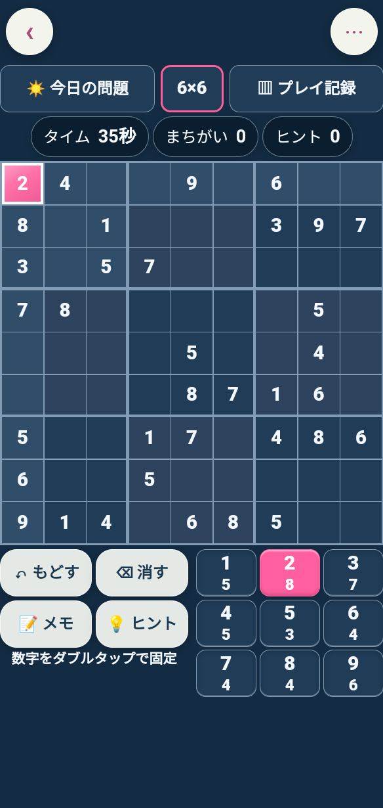

飛行機でナンプレは遊べる？ Androidで搭乗前に準備すること
搭乗口でWi-Fiが使えるうちにゲームを入れておくと、機内の過ごし方がひとつ増えます。私たちのAndroidアプリ「オフラインゲーム10000」では、インストール後は通信なしでナンプレ、ソリティア、色分けパズルを遊べます。
出発前に、一手だけ試しておく
1. 通信できる場所でAndroid版をインストールします。
2. 端末の機内モードをオンにして、Wi-Fiもオフになっていることを確認します。
3. アプリを開き、ナンプレを選びます。空いているマスを選んで数字を一つ入れておけば、機内でも迷わず遊び始められます。
機内モードで試した結果
2026年11月22日、BlueStacksのAndroid環境で、Google Playから入れたバージョン1.203.0を検証しました。機内モードをオン、Wi-Fiをオフにしてナンプレを開き、左上の空欄に「2」を入力できました。画面の「まちがい」は0のままです。

機内モードでナンプレの一手目を入力した画面通信量を使い切った日でも遊べる？
すでにインストールしてあれば、ナンプレなどのプレイにモバイルデータは不要です。カードをめくりたいときはソリティア、数字から少し離れたいときは色分けパズルも選べます。広告の表示、アプリ内購入、購入の復元には通信が必要です。
Google PlayでAndroid版を見る